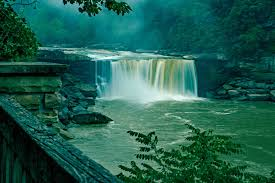
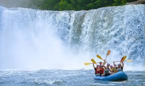
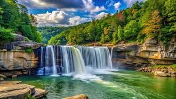

Take in the scenery of mist and vibrant foliageThe 4-mile walk through the moderate rainforest is an incredible experience in itself,
even before reaching beautiful Ranger Falls in the Carbon River corner of the park.
As you journey along the trail, become inspired by Nature’s awesome power as the Carbon River cuts a wide path through this valley, rearranging the landscape at will.
A short spur trail off the Green Lake trail leads to falls.
The falls tumble 44 feet, then another 55 feet along Ranger Creek before splitting into two segments before again converging, for another 73-foot drop.
It’s an especially pretty sight as the portion of the falls split into twin falls as they descend.
Just another 0.8 miles down the trail lies Green Lake – another must-see sight in the park.


